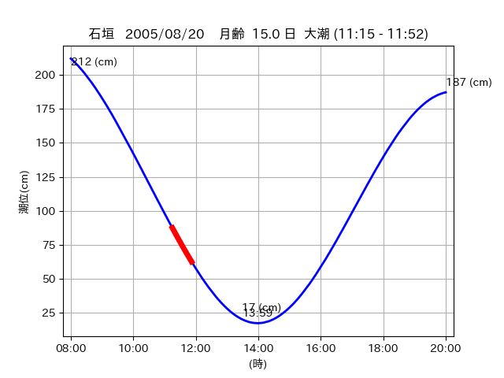
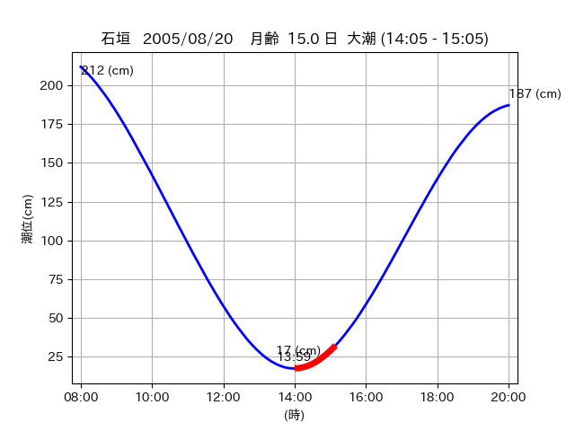

<!DOCTYPE html>
<html>
<head>
    
    <meta http-equiv="content-type" content="text/html; charset=UTF-8" />
    
        <script>
            L_NO_TOUCH = false;
            L_DISABLE_3D = false;
        </script>
    
    <style>html, body {width: 100%;height: 100%;margin: 0;padding: 0;}</style>
    <style>#map {position:absolute;top:0;bottom:0;right:0;left:0;}</style>
    <script src="https://cdn.jsdelivr.net/npm/leaflet@1.9.3/dist/leaflet.js"></script>
    <script src="https://code.jquery.com/jquery-3.7.1.min.js"></script>
    <script src="https://cdn.jsdelivr.net/npm/bootstrap@5.2.2/dist/js/bootstrap.bundle.min.js"></script>
    <script src="https://cdnjs.cloudflare.com/ajax/libs/Leaflet.awesome-markers/2.0.2/leaflet.awesome-markers.js"></script>
    <link rel="stylesheet" href="https://cdn.jsdelivr.net/npm/leaflet@1.9.3/dist/leaflet.css"/>
    <link rel="stylesheet" href="https://cdn.jsdelivr.net/npm/bootstrap@5.2.2/dist/css/bootstrap.min.css"/>
    <link rel="stylesheet" href="https://netdna.bootstrapcdn.com/bootstrap/3.0.0/css/bootstrap-glyphicons.css"/>
    <link rel="stylesheet" href="https://cdn.jsdelivr.net/npm/@fortawesome/fontawesome-free@6.2.0/css/all.min.css"/>
    <link rel="stylesheet" href="https://cdnjs.cloudflare.com/ajax/libs/Leaflet.awesome-markers/2.0.2/leaflet.awesome-markers.css"/>
    <link rel="stylesheet" href="https://cdn.jsdelivr.net/gh/python-visualization/folium/folium/templates/leaflet.awesome.rotate.min.css"/>
    
            <meta name="viewport" content="width=device-width,
                initial-scale=1.0, maximum-scale=1.0, user-scalable=no" />
            <style>
                #map_d55de12996b3604a76429bc4ded8c4f6 {
                    position: relative;
                    width: 2048.0px;
                    height: 1600.0px;
                    left: 0.0%;
                    top: 0.0%;
                }
                .leaflet-container { font-size: 1rem; }
            </style>
        
</head>
<body>
    
    
            <div class="folium-map" id="map_d55de12996b3604a76429bc4ded8c4f6" ></div>
        
</body>
<script>
    
    
            var map_d55de12996b3604a76429bc4ded8c4f6 = L.map(
                "map_d55de12996b3604a76429bc4ded8c4f6",
                {
                    center: [24.527, 124.314],
                    crs: L.CRS.EPSG3857,
                    ...{
  "zoom": 12,
  "zoomControl": true,
  "preferCanvas": false,
}

                }
            );

            

        
    
            var tile_layer_87cc0878a821df13250d4d70cb189dcb = L.tileLayer(
                "https://cyberjapandata.gsi.go.jp/xyz/seamlessphoto/{z}/{x}/{y}.jpg",
                {
  "minZoom": 0,
  "maxZoom": 18,
  "maxNativeZoom": 18,
  "noWrap": false,
  "attribution": "\u5730\u7406\u9662\u5730\u56f3",
  "subdomains": "abc",
  "detectRetina": false,
  "tms": false,
  "opacity": 1,
}

            );
        
    
            tile_layer_87cc0878a821df13250d4d70cb189dcb.addTo(map_d55de12996b3604a76429bc4ded8c4f6);
        
    
            var marker_88dd64e75e547b4640d82913eff64a48 = L.marker(
                [24.559, 124.3346],
                {
}
            ).addTo(map_d55de12996b3604a76429bc4ded8c4f6);
        
    
            var icon_cee53fbf34603b6c5dbefbc829d4c8ed = L.AwesomeMarkers.icon(
                {
  "markerColor": "orange",
  "iconColor": "white",
  "icon": "info-sign",
  "prefix": "glyphicon",
  "extraClasses": "fa-rotate-0",
}
            );
        
    
        var popup_35a363206903b4f4c842384d191adcb4 = L.popup({
  "maxWidth": "100%",
});

        
            
                var html_50a1d761f15ec10e5bde546608a18879 = $(`<div id="html_50a1d761f15ec10e5bde546608a18879" style="width: 100.0%; height: 100.0%;"><table><tr><td></td></tr><tr><td><center>20050820 No.1 </center></table></td></tr></table</div>`)[0];
                popup_35a363206903b4f4c842384d191adcb4.setContent(html_50a1d761f15ec10e5bde546608a18879);
            
        

        marker_88dd64e75e547b4640d82913eff64a48.bindPopup(popup_35a363206903b4f4c842384d191adcb4)
        ;

        
    
    
                marker_88dd64e75e547b4640d82913eff64a48.setIcon(icon_cee53fbf34603b6c5dbefbc829d4c8ed);
            
    
            var poly_line_44ccebaf70719f4aefc4c8ef2bcb03d6 = L.polyline(
                [[24.559, 124.3346], [24.5573, 124.336]],
                {"bubblingMouseEvents": true, "color": "#00FFFF", "dashArray": null, "dashOffset": null, "fill": false, "fillColor": "#00FFFF", "fillOpacity": 0.2, "fillRule": "evenodd", "lineCap": "round", "lineJoin": "round", "noClip": false, "opacity": 1.0, "smoothFactor": 1.0, "stroke": true, "weight": 3}
            ).addTo(map_d55de12996b3604a76429bc4ded8c4f6);
        
    
            var marker_3e213075a8a2bcfab539f3d5a0e4d3f3 = L.marker(
                [24.5283, 124.3156],
                {
}
            ).addTo(map_d55de12996b3604a76429bc4ded8c4f6);
        
    
            var icon_3f64d52ec7bec3f469935e6a65ba7df7 = L.AwesomeMarkers.icon(
                {
  "markerColor": "orange",
  "iconColor": "white",
  "icon": "info-sign",
  "prefix": "glyphicon",
  "extraClasses": "fa-rotate-0",
}
            );
        
    
        var popup_2d1ccb4a3ec2ded2569d9a93c5b7ae1a = L.popup({
  "maxWidth": "100%",
});

        
            
                var html_8528d92aa446d66e7ae8403c0264f0ef = $(`<div id="html_8528d92aa446d66e7ae8403c0264f0ef" style="width: 100.0%; height: 100.0%;"><table><tr><td></td></tr><tr><td><center>20050820 No.2 </center></table></td></tr></table</div>`)[0];
                popup_2d1ccb4a3ec2ded2569d9a93c5b7ae1a.setContent(html_8528d92aa446d66e7ae8403c0264f0ef);
            
        

        marker_3e213075a8a2bcfab539f3d5a0e4d3f3.bindPopup(popup_2d1ccb4a3ec2ded2569d9a93c5b7ae1a)
        ;

        
    
    
                marker_3e213075a8a2bcfab539f3d5a0e4d3f3.setIcon(icon_3f64d52ec7bec3f469935e6a65ba7df7);
            
    
            var poly_line_47300d96ee072a7b9e6396ddf6046b73 = L.polyline(
                [[24.5283, 124.3156], [24.5136, 124.3092]],
                {"bubblingMouseEvents": true, "color": "#00FFFF", "dashArray": null, "dashOffset": null, "fill": false, "fillColor": "#00FFFF", "fillOpacity": 0.2, "fillRule": "evenodd", "lineCap": "round", "lineJoin": "round", "noClip": false, "opacity": 1.0, "smoothFactor": 1.0, "stroke": true, "weight": 3}
            ).addTo(map_d55de12996b3604a76429bc4ded8c4f6);
        
    
            var marker_175637fa1212e12f3ea065f85ab76f8e = L.marker(
                [24.5367, 124.3173],
                {
}
            ).addTo(map_d55de12996b3604a76429bc4ded8c4f6);
        
    
            var icon_d28c6193401dc3bf955958787b463146 = L.AwesomeMarkers.icon(
                {
  "markerColor": "orange",
  "iconColor": "white",
  "icon": "info-sign",
  "prefix": "glyphicon",
  "extraClasses": "fa-rotate-0",
}
            );
        
    
        var popup_0e82e5dfb84b81f92268024b60475f93 = L.popup({
  "maxWidth": "100%",
});

        
            
                var html_406b39645dd74c0d58442a8ac0415597 = $(`<div id="html_406b39645dd74c0d58442a8ac0415597" style="width: 100.0%; height: 100.0%;"><table><tr><td></td></tr><tr><td><center>20050820 No.3 </center></table></td></tr></table</div>`)[0];
                popup_0e82e5dfb84b81f92268024b60475f93.setContent(html_406b39645dd74c0d58442a8ac0415597);
            
        

        marker_175637fa1212e12f3ea065f85ab76f8e.bindPopup(popup_0e82e5dfb84b81f92268024b60475f93)
        ;

        
    
    
                marker_175637fa1212e12f3ea065f85ab76f8e.setIcon(icon_d28c6193401dc3bf955958787b463146);
            
    
            var poly_line_caf61053cde8e3c92fd76cfc0c0d32ba = L.polyline(
                [[24.5367, 124.3173], [24.5167, 124.3107]],
                {"bubblingMouseEvents": true, "color": "#00FFFF", "dashArray": null, "dashOffset": null, "fill": false, "fillColor": "#00FFFF", "fillOpacity": 0.2, "fillRule": "evenodd", "lineCap": "round", "lineJoin": "round", "noClip": false, "opacity": 1.0, "smoothFactor": 1.0, "stroke": true, "weight": 3}
            ).addTo(map_d55de12996b3604a76429bc4ded8c4f6);
        
</script>
</html>